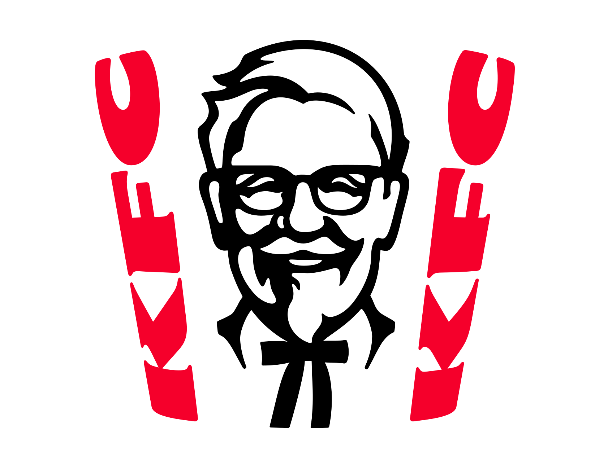

이 문서는 다른 뜻에 대한 내용을 다루고 있습니다. KFC(동음이의어)에 대한 내용은 KFC(동음이의어) 문서를 참조하세요.
[틀: 틀:미국의 주요 치킨 프랜차이즈]| KFC 케이에프씨 | |
 | |
| 브랜드명 | Kentucky Fried Chicken (1930-1991) KFC (1991-) |
| 국가 | 🇺🇸 미국 |
| 창업일 | 1930년 3월 20일 (96세주년) |
| 설립자 | 할랜드 샌더스 |
| 대표자 | 스콧 메즈빈스키 (Scott Mezvinsky) |
| 핵심 인물 | 데이비드 C. 노박 묵테쉬 판트 로저 이튼 |
| 모회사 | Yum! Brands |
| 본사 소재지 | 켄터키 주 루이빌[1] |
| 텍사스 주 플레이노[2] | |
| 링크 | |  | |  | |  | | | | |
목차
1. 개요
| [youtube(u8J3V6wchSE)] |
| KFC X WWE |
2. 역사
 | |
| 로고 변천사 | |
| [youtube(8Jaw4xhY3dk)] | [youtube(8NVW3VwzZfE)] |
| 위 영상은 국내 전국 매장에서 직접 틀어주기도 한다. | |
 |
| 할랜드 샌더스의 모습 |
1971년 주류업체 휴블린에 경영권이 팔렸다가 1982년에 휴블린이 담배재벌 R.J. 레이놀즈[5]에 합병되면서 그 회사 브랜드가 됐지만 1986년 펩시코에 인수되었고, 1991년에 상호명도 'KFC'로 바꿨다. 1997년 펩시코 외식사업부가 분사하면서 현재 얌 브랜드 산하에 있다.
인수 이후에도 샌더스 대령이 실제 경영에 많은 영향력을 행사했다고 한다. 경영권을 가진 회사가 요식업에서는 샌더스 대령보다 경험이 적기도 했고, 만약 맛이 맘에 들지 않으면 찾아가서 개선을 요구했다는 일화나 자기가 직접 가게에 들어가서 음식을 조리하곤 했다는 일화도 있다.
샌더스 대령은 인생의 황혼기에 대박을 맞은 경우로, 작은 식당을 차렸으나 1년 만에 화재로 모든 것을 잃은 뒤 연금만으로 생활하고 있었다. 역경에도 굴하지 않고 억만장자에 등극한 인물의 대명사로 꼽히고 있다. 게다가 '대령'으로 불리는 것은 실제 군 복무 계급이 아니고, 친구가 켄터키 주 주지사가 되며 명예 대령 계급을 수여해 준 것. 미국 남부에서는 원래 중년 이상 되는 신사에게 존칭으로 Colonel이라고 불러주며, 꼭 군인 출신이 아니더라도 존경받는 어르신에게는 자주 부르기도 한다.
결국 인생의 반전을 달성하고자 생각한 그는 어렸을 때부터 집안일을 도우면서 익힌 자신만의 요리 실력으로 사업을 시작하기로 결심, 노구를 이끌고 미국 전역을 돌아다니면서 자신만의 닭 요리법을 홍보하기 시작했다. 당시 홍보 비용이 넉넉지 않았던 그는 그는 끼니도 홍보용으로 만들고 남은 자신의 치킨과 비스킷으로 해결했다고 한다. 무려 수백 번의 시도 끝에[6] 한 식당에서[7] 샌더스에게 치킨 1조각을 판매할 때마다 일정 금액의 로열티를 준다는 계약을 체결했다. 샌더스의 치킨이 엄청난 인기를 끌게 되자 식당에서 독립하여 '켄터키 프라이드 치킨(KFC)'이라는 개인 식당을 창업하면서 지금에 이르게 된 것이었다. 이 창업 스토리가 '아무리 절망적이어도 희망을 놓지 말라' 등의 좋은 교훈이 있기에 EBS TV의 교양 프로그램 지식채널ⓔ에서도 소개되었다.
2006년 11월 중순에는 네바다 주의 한복판에 대형 로고를 설치하고 위성 사진으로 이를 촬영하는 형식으로 새로운 로고를 발표하기도 했다. 그레그 데드릭 사장은 새로운 로고를 발표하면서 "외계인이 있다면 KFC를 선택하기 바란다", "미항공우주국(NASA)의 우주비행사나 화성 생명체로부터 신호를 받으면 원재료로 만든 치킨을 보낼 것"이라는 다소 엽기적이고 우스꽝스러운 발언을 하기도 했다. 국내 언론에서는 KFC가 현대판 만리장성을 건설했다며 극찬을 아끼지 않았다. #
맥도날드와 함께 미국 문화를 상징하는 프랜차이즈 대기업이라서 여러 미디어에서 미국 문화의 상징으로 표현되기도 한다.[8]
3. 상호
상호인 KFC는 Kentucky Fried Chicken의 약자다.[9] 처음 창업할 때는 상호가 'Kentucky Fried Chicken'였지만, 1991년부터 약칭인 'KFC'로 상호를 바꿨다.Kentucky Fried Chicken에서 KFC로 바꾼 이유는 두 개가 있는데, KFC 공식 입장으론 1980년대 말부터 미국 전역에 대유행이 된 저지방 열풍 때문에 매출이 줄어들자 상호명에서 기름에 튀겼다는 의미인 'Fried'를 제거하기 위했다는 것이었다. 그리고 1990년 켄터키 주에서 주의 이름인 '켄터키'가 상표로 등록되어 해당 이름이 들어가는 브랜드에 대해 라이선스 협상이 필요했고 KFC는 라이선스 협상을 피하고자 잠시 약칭으로 바꿨다. KFC 뿐만 아니라 동시기 켄터키 더비는 라이선스 비용을 피하기 위해 한동안 비공식 명칭이었던 'Run for the Roses'를 사용하는 등의 다른 사례 또한 있다.[10] 결국 이 기묘한 상황은 2006년 KFC가 소속된 Yum! Brands가 켄터키 더비 공식 스폰서가 된 이후 비공개 합의를 통해 'Kentucky Fried Chicken'을 계속 사용하고 있다. 출처
Yum! Brands의 자회사인 KFC의 공동 본사는 켄터키 주 루이빌과 텍사스 주 플레이노에 있다. 공식 업무는 루이빌에서 담당하고 글로벌 사업 분야는 플레이노에서 담당하는 방식으로 이원화했다. 본사가 켄터키 주뿐만 아니라 텍사스 주에도 공동으로 생기자 기존 상호인 KFC를 TFC로 바꿔야 하는 것 아니냐는 농담이 등장하기도 했다.
4. 특징
4.1. 양념
 |
이와 관련, 2016년에 샌더스의 조카 레딩턴이 오리지널 레시피로 추정되는 자료를 공개해서 논란이 된 적이 있다. 그는 어릴 적 자신이 KFC 치킨의 향신료를 배합하는 일을 한 적이 있다고도 밝혔다. # 레딩턴은 이후에 말을 바꿔 '기자에게 레시피를 보여준 적이 없다'거나 '오리지널 레시피인지 확실하게는 모른다'라고 말했으며, 뉴욕타임즈의 취재요청을 거절하기도 했다. 이에 따라 유튜버들이 실험한 영상에서는 실제로 매우 흡사한 맛이 난다고 한다.
현재 한국에서는 핫 크리스피 치킨이 잘 나가다보니 KFC 하면 핫 크리스피가 먼저 떠오르고 저 11가지 비밀양념도 핫 크리스피에 대한 얘기로 오해할 수 있겠지만, 이 레시피는 오리지널 치킨에 한정되는 사항이다. 이미 여러 프랜차이즈의 유사 제품들이 나온 것을 감안하면 핫 크리스피 메뉴는 해당 사항이 없다고 볼 수 있다. 실제로 오리지널 치킨의 경우에는 이렇다 할만한 유사 제품이 없는 상황이기도 하고. 동키치킨 등이 그나마 좀 비슷한 맛을 내지만, 그래도 상대적으로 맛이 다소 약하고 질긴 편이다.
영어로는 "11 herbs and spices"라 부른다. KFC의 공식 트위터에 가 보면 @kfc가 팔로우하는 사람이 11명임을 볼 수 있는데, 11명 중 여성은 모두 스파이스 걸스의 멤버들이고 남성은 모두 허브(Herb)라는 이름을 가진 사람들이다.
4.2. 압력 튀김
KFC의 오리지널 치킨 메뉴들은 특이하게도 압력 튀김기(Pressure Fryer)에 치킨을 넣고 조리한다. 본래 이 방식은 커널 샌더스가 치킨을 조리할 때부터 써 왔던 방식으로 처음에는 팬에 치킨을 조리했지만 조리가 빠르게 되지 않는다는 것을 알게 되자[11] 생각해낸 것이 바로 압력솥. 압력솥에 치킨을 조리하면 살코기에 수분이 촉촉하게 밴다는 사실을 알아내면서 압력솥 조리로 전향했다고 알려져 있다. 지금도 KFC는 샌더스의 조리 방식을 계승해 압력 튀김기를 사용하고 있는데, 샌더스 사후 직원들의 의견을 수렴해 불필요하거나 오히려 조리하는 데 위험한 과정을 개선하고 튀김망을 다층으로 구성했으며 튀김기의 원가를 조금이나마 절감하는 등의 개선을 거쳤기에 처음 나온 압력 튀김기와는 다소 달라졌다.[12] 1980년대 중반 한국에 KFC가 들어오며 전국 방송에 때렸던 1986년작 광고[13]에도 이 압력솥 장면이 나온다. 다만 한국에서 오리지널 외의 메뉴는 오픈 프라이어(흔히 보는 튀김기)도 사용한다. #영상4.3. 그레이비 소스
 |  | ||
| 그레이비 소스 | 매쉬 그레이비 | ||
한국 KFC에서 초기에 도입되기는 했으나 1992년 단종되었고 그게 2020년대까지 쭉 이어져왔다. 그러다 보니 한국 KFC의 특징으로 그레이비 소스가 없다는 게 지금까지의 통념이었다. 신맛이 있어 입안을 상큼하고 개운하게 해주는 코울슬로와 콘샐러드와는 달리 그레이비 소스를 얹은 매쉬드 포테이토는 비인기 메뉴였고 특히 맵고 강하며 자극적인 맛에 익숙하고 선호되는 한국인들에게는 그레이비 소스가 맵지 않고 오히려 느끼하다는 평을 받을 정도로 입맛에 맞지 않기 때문이다.
초창기 KFC는 미국과 똑같이 오리지널 치킨과 그레이비 소스를 주요 제품으로 홍보했는데[15] 손님들 중 대부분은 오리지널 치킨과 함께 딸려나오는 그레이비 소스가 느끼하고 이상한 향[16]이 난다며 안 먹는 사람들이 많았고 그래서 자연히 한국 KFC에서의 매출이 낮은 것이다. 그러다가 크리스피의 평이 오리지널보다 낫다는 것을 발견하고 완전히 크리스피 치킨을 주력으로 삼기 시작해서 현재의 모습으로 발전한 것.[17]
2011년 머시룸 그릴버거라는 이름으로 '머시룸 그레이비 소스'가 들어간 햄버거가 출시되어서 많은 이들을 설레게 했지만 이름만 그레이비 소스일 뿐 맛은 해외와 전혀 달랐다. 게다가 그마저도 별로 뿌려주지 않아서 있는지도 몰랐다는 평이 대다수다.
이태원 근처의 주한미군부대 안에 KFC를 비롯한 패스트푸드 매장이 있는데 그 매장에서는 그레이비 소스를 얹은 매쉬 포테이토를 팔고 있다. 참고로 치킨도 오리지날의 느끼함과 익숙하지 않은 허브향이 강하다.
참고로 일본과 중국 KFC[18]에도 그레이비 소스가 없다. 다만 동남아 지역 KFC에는 있는데 이곳에선 그레이비 소스에 밥을 비벼먹는 방식으로 유명하다.
2019년 10월 22일부터 대한민국 KFC에 그레이비 포테이토 타르트라는 메뉴가 추가되면서 대한민국 KFC에서도 특유의 그레이비 소스를 맛볼 수 있게 되었으며, 2020년 11월 17일 케이준 프라이 출시 이후 그레이비 소스를 정식 출시하며 한국에서도 그레이비 소스를 별도로 주문할 수 있게 되었다. 다만 기존 그레이비는 한국인 입맛에 맞지 않아[19] 단종되었기에 새로 출시한 그레이비는 현지화를 거쳤다. 원래 그레이비 소스의 짜고 느끼함을 줄이고 단맛을 추가했는데 한국에서 고기와 곁들이는 소스로 단맛이 많이 들어가는 것을 염두에 둔 것으로 보인다.[20] 그러다보니 기존 그레이비를 좋아했던 층도 새로운 층도 잡지 못하는 애매한 맛이 되었다는 평이 주류다. 그래도 업그레이비 버거를 좋아하는 사람들에겐 좋은 평을 듣기도 한다. 원래부터 따듯한 소스라 차가운 상태랑 따듯한 상태의 맛차이가 큰 차이도 있다. 그렇지만 양은 30g이라는 적은 양에 가격은 다른 소스들의 2배인 500원으로 출시되어 창렬하다는 의견이 많았다.[21]
2024년 9월부터 KFC의 그레이비 소스 가격이 500원에서 700원으로 인상되었다. 그리고 말이 많던 그레이비 소스의 레시피가 바뀌어서 해외에서 먹던 그레이비 소스의 맛과 비슷해졌다. 원료명을 자세히 보면 기존 그레이비 소스는 데미그라스 소스 베이스로 만들어졌는데 신규 레시피는 치킨스톡 베이스로 변경되었다.
버거 메뉴에는 켄터키치킨업그레이비버거에 그레이비 소스가 들어있는데, 통다리살인 데다 야채가 없음에도 소스가 야채의 공백을 메꿔줘 맛있다는 평을 받았으나 얼마 안 가 단종되었다. KFC의 치킨버거 중 몇 안 되는 다리살이었기 때문에 단종이 아쉽게 다가오는 부분.
2026년 5월부터 한국 KFC에서도 영미권 KFC처럼 따뜻하게 데운 빅 그레이비가 시판되기 시작하였다. 가격은 1,900원이고 가수 이영지가 광고하였다.
4.4. 홀딩
패스트푸드라는 특성상 KFC는 주요 제품들을 미리 튀겨서 데운 상태로 준비해 놓는다. 한국의 다른 치킨 프렌차이즈들이 주문을 받고 튀기는 것과는 확실한 장단점이 공존하는 셈이다. 치킨을 좋아하는 한국 특성상 다른 치킨 패스트푸드 체인점들이 주문 후 조리 정책으로 변경하고 있지만 KFC는 국제 규격에 맞추어 여전히 홀딩 시스템을 고수하고 있다. KFC는 패스트푸드점이기에 음식을 빨리 내기 위해 이런 방식을 고수하고 있는데, 다른 나라와 다르게 한국은 치킨 공화국이라는 별명이 있을 정도로 주문하면 그 즉시 튀겨서 배달해주는 곳이 많다 보니 더욱 부각되는 셈. 거기에 치킨을 보관하는 것도 고온다습한 홀딩 전용 보관기에 넣고 보관하기 때문에 기본적으로 치킨이 따듯하며 바삭하지 않고 미지근하고 눅눅하다. 특히 오리지널 치킨이 인기있는 나라의 경우 이러한 특징이 부각된다. #그래서 미리 조리해 둔 제품들이 많다. 손님이 많은 시간에 가면 갓 튀긴 걸 먹을 수 있을 것 같지만 매장도 그런 시간대에는 주문이 밀리지 않도록 이미 더 많이 튀겨놔서 홀딩시키므로 미리 완성해 둔 치킨을 먹을 가능성이 높아진다. 때문에 눅눅한 치킨이 싫다면 아예 애초부터 주문을 넣을 때 소스가 잔뜩 버무려진 갓양념치킨 등으로 하는 것도 한 방법이다.
특히 오리지널 치킨의 경우 몇십 분 정도의 홀딩으로는 장점인 퍽퍽살까지 부드럽고 촉촉한 맛이 크게 달라지지 않지만, 국내에서는 오리지널 치킨이 잘 팔리지 않기 때문에 회전이 안 돌면 몇 시간 단위로 장시간 홀딩되는 경우가 가끔 있는데 그럴 경우에는 정말 맛이 없어진다.[22] 아예 홀딩오리라고 부르면서 다른 메뉴 취급하기도 할 정도. 이 때문에 오리지널 치킨 매니아들은 오래 홀딩된 오리지널 치킨을 피하기 위해 갖가지 방법을 생각하는 경우가 있다.[23]
4.5. 샌더스상
 |  | ||
1985년 한신 타이거스가 센트럴 리그 우승을 차지했을 때 흥분한 팬들이 KFC 가게 앞의 샌더스 조각상을 랜디 바스와 닮았다고 오사카의 도톤보리강에 던진 적이 있는데, 그 해를 끝으로 한신은 38년 동안 일본시리즈 우승을 차지하지 못했었다. 이를 두고 커널 샌더스의 저주라고 한다. 그리고 당시 던져졌던 샌더스 상은 2009년 하천 준설 과정에서 발견되어 한신 팬들에게 충공깽을 주기도 했다. 2023년 한신이 일본제일을 이뤄내자 흥분한 한신팬들은 커널 샌더스 코스어를 던졌다.
4.6. 마케팅
| [youtube(KxGZYYdf1vM)] |
| [youtube(S90GTdS_PwY)] |
 |
| [youtube(BrxTM10Hq0g)] |
 |
| [youtube(73SqN-ueP7g)] |
 |
트위터의 KFC 스페인 지부 계정 (@KFC_ES)[29] 은 제품이나 기업 홍보보다 각종 밈 사진이나 영상의 뻘포스팅 분량이 더 많은 것으로 유명하다. "괜찮아 자기? 옵티머스 프라임 튀김에 손도 안 댔잖아"[30] 다른 언어 계정은 장난이나 밈 포스팅을 어쩌다 한두 번씩 적당한 선에서 하는 와중에 유독 스페인 지부 계정만 지독하게 밈을 포스팅해 대는데, 그것도 그것대로 광고효과가 있다고 생각하는지 본사도 가만 두는 모양이다.
2018년 영국에선 배송업체의 변경 등의 이유로 치킨 공급이 원활하지 않아 매장의 2/3가 문을 닫는 사태가 벌어지기도 했다. 이때 영국에서 민심을 크게 잃자 영국 지사측은 FCK란 이름을 달고 '치킨 매장에서 닭이 없는 일이 일어났다'며 자조하는 내용의 사과문을 게시해 민심을 돌려놓는 데 성공한다. 이는 성공적인 마케팅 중 하나로 회자되고 있다.
5. 메뉴
자세한 내용은 KFC/메뉴 문서를 참고하십시오.
메뉴가 고정된 파파이스와는 달리 KFC는 신제품 개발에 신경을 쓰는 편이고 이따금씩 히트 상품을 발굴해내는 경우가 많다. 1990년대에는 징거버거, 2000년대에는 타워버거, 2010년대에는 징거더블다운이 있다.징거더블다운맥스 버거는 현재까지도 판매되는 KFC가 내놓은 가장 혁신적인 버거 중에 하나다. 칼로리 폭탄이라는 악명이 있기 때문에 주력 상품은 아니지만 여전히 수요가 있으며, 이제는 사람들에게 KFC를 대표하는 메뉴 중 하나로 인식된 상황. 신제품 개발에 적극적인 모습을 보이고는 있지만 월드타워버거 이후로 이렇다할 임팩트 있는 버거 개발에는 번번이 실패하고 있는 상황이다. 최근에 빨간맛 버거가 출시되면서 나름 신선하다는 평가를 받기는 하지만 그보다 더 좋은 평가를 받았던 월드타워버거가 사라진 점은 매니아층 사이에서 매우 아쉬워하고 있다.
한편, KFC는 치킨 전문점으로 출발했는데, 치킨 메뉴는 2018년까지는 이따금씩 신규 메뉴를 내놨지만 결국 한정판 취급으로 단종되어 오리지널/크리스피 두 맛만 남는 일이 잦았다. 하지만 2019년부터는 일신하여, 갓양념치킨, 블랙라벨(순살)치킨 등 신메뉴를 상설화하면서 예전보다 메뉴가 다양해졌다. 물론 마늘빵, 트러플, 갓쏘이 등 새로운 맛 도입 시도도 지속 중. 특히 치킨 나이트 프로모션으로 가성비까지 잡으면서, 밤 시간대에는 치킨 주문이 더 활발해졌다.
 |
| 괌 도로변 옥외광고판 |
6. 국가별 정보
6.1. 대한민국의 KFC
자세한 내용은 KFC/대한민국 문서를 참고하십시오.
KFC 코리아는 지속적인 매출 하락 때문에 인수자가 계속 바뀌고 있는데, 본래 초기에는 두산그룹 계열사에서 운영하고 있었다가 사모펀드인 CVC에게 매각되었다가 2017년 KG그룹이 KFC 코리아를 인수했다. KG그룹은 지속적으로 적자를 내는 KFC 코리아를 애물단지로 여기고 2023년에 사모펀드(PEF) 운용사인 오케스트라 프라이빗 에쿼티로 매각했으며 # 오케스트라 프라이빗 에쿼티도 KFC 코리아의 운영에 한계를 느끼고 2025년 연말에 투자 펀드 업체인 칼라일그룹에게 매각했다. #6.2. 세계의 KFC
자세한 내용은 KFC/타국 문서를 참고하십시오.
7. 콜라보 이벤트
7.1. 일본
- 2024년 5월 16일 명일방주와 콜라보가 진행이 시작됐다.#[32]
- 2024년 8월 24일 우마무스메 프리티 더비와 콜라보가 진행이 시작됐다.
- 2024년 10월 2일 원신과의 콜라보가 진행되었다. #
- 2026년 8월 12일 우마무스메 프리티 더비와의 콜라보가 진행된다. #
8. 대중 매체
- 크레이지 택시에 손님들의 목적지 중 하나로 등장. 1편과 3편(2편은 미등장)은 KFC 이름 그대로 썼으나, 이후의 이식작들은 라이선스가 만료됐는지 FCS(Fried Chicken Shack)라는 패러디명으로 바뀌었다.
- Grand Theft Auto 시리즈에서 나오는 치킨집 클러킹 벨(Cluckin' Bell)은 KFC를 모티브로 한 건 맞는데, 로고 상징과 상호명으로 보아 타코벨의 포지션도 섞여있는 듯하다. 산 안드레아스에서 빅 스모크가 차를 몰며 칼 존슨과 친구들과 함께 드라이브 스루로 향해서 대량으로 시켜먹은 곳이 바로 이곳. 유명한 밈 Big Smoke's Order의 원본이기도 하다.
- 영화 그린 북에서, 켄터키 주를 지나다가 토니가 KFC를 발견하고 설리를 설득하여 오리지널 치킨 버킷을 구매한 후 사자마자 설리와 함께 맛있게 먹는다.
- 크레이지 아케이드에 해당 치킨집을 홍보했던 켄터키 맵이 존재한다. 이는 게임이 KFC와 콜라보했기 때문. BGM도 켄터키 옛집을 편곡한 노래다. 지금도 해당 맵은 존재하지만 프로모션이 끝난 지 오래되어서 'KFG'라는 패러디명으로 나온다.
- 패밀리 가이에서도 등장.
- 애니메이션 사우스 파크에서는 에릭 카트먼이 KFC 크리스피 치킨의 껍데기만 다 떼먹고 도망가서 정이 뚝 떨어져버린 스탠, 카일, 케니가 에릭을 투명인간 취급해버리는데, 그걸 자신이 죽어서 못 알아보는 건 줄 안 에릭은 자기가 귀신이라며 온 동네방네 난리를 친다. 또한 KFC의 그레이비 소스가 주요한 주제로 다루어진 에피소드도 있었다.
- 대만 감마니아의 패스트푸드 프랜차이즈 경영 게임에서는 KLC(켄터키 레이디 치킨. 원본은 KLT.)라는 이름으로 패러디되어 등장했다. 참고로 버거킹은 버거퀸, 롯데리아는 놋데리아, 맥도날드는 웹도날드로 패러디했다.
9. 여담
- 1952년 프랜차이즈 개점 당시 메뉴판. 1952년의 1달러는 2024년 가치로 환산하면 약 11.8달러다.
- 파파이스가 다람쥐를 튀긴 전적이 있는 것처럼 이 쪽은 시궁쥐가 튀겨진 채로 발견되었다는 루머가 돌았지만 이는 사실이 아니다. 2015년 미국 캘리포니아에 사는 디스 딕슨이라는 남성이 쥐 모양을 쏙 빼닮은 치킨조각의 사진을 sns에 올리며 '자신이 KFC에서 산 치킨에서 쥐 튀김이 발견되었다, 먹어보니 마치 고무 같았다, 매장 직원도 이를 인정하고 사과했다.'라는 주장을 연이어 펼쳤다. KFC는 즉시 사실이 아님을 공지했고, 아예 딕슨의 변호사로부터 문제의 튀김을 넘겨받아 DNA 검사까지 진행한 끝에 쥐 튀김이 아닌 쥐 모양의 치킨조각임을 밝혀냈다.
- 로고의 리본이 팔다리처럼 보인다는 의견이 많다. # #
- TV 매체에서는 언급시 간접광고가 아니라면 '(켄터키) 할아버지 치킨'이라고 돌려 말하는 편이다.
10. 관련 문서
각주
- [1] # ↑
- [2] # ↑
- [3] 재미있는 사실은 한중일 국가 중 한국을 제외한 나머지 국가들은 모두 KFC를 'KFC'라고 발음하지 않고 '켄터키'라고 부른다. 현지 발음으로 중국에서는 컨더지(肯德基, 긍덕기), 일본에서는 켄타키(ケンタッキー). 그래서 공식 사명은 KFC지만 이 국가들에 가서 KFC라고 말하면 대부분의 사람들이 못 알아듣는다. 참고로 중국에서는 KFC가 맥도날드, 스타벅스를 넘는 위상을 자랑하며, 일본에서도 크리스마스에 KFC를 먹는 문화가 있을 정도로 사랑받고 있다. # ↑
- [4] 본명은 John Young Brown Jr.(1933-2022)이다. ABA 팀 켄터키 커널스, NBA 팀 버팔로 브레이브스와 보스턴 셀틱스 구단주를 각각 지냈으며, 1979~1983년까지 켄터키 주지사를 지냈다. KFC 역사에서 중요한 역할을 담당한 인물로, 매출과 수익 모두 증대되어 KFC가 대기업으로 발돋움하는 데 기여했다. 2022년 11월 22일 사망했다. 영문 위키 해당 인물 문서 ↑
- [5] 카멜, 윈스턴, 살렘 등으로 유명하며, 1962년 '하와이안 펀치'를 생산했던 퍼시픽 하와이안 프로덕츠를 비롯해 1979년 델몬트, 1985년 나비스코까지 인수해 거대 식품재벌로 등극했으나 1988년에 콜버그 크래비스 로버츠에 팔면서 식품사업을 서서히 정리했다. ↑
- [6] 1009번 시도했다는 말이 널리 퍼져 있으나 샌더스의 두 번째 아내의 말에 따르면 600번에서 790번 정도였다고 한다. ↑
- [7] 그게 웬디스라는 말이 있다. ↑
- [8] # ↑
- [9] KFC 베트남의 영문 소개 페이지: "KFC is the abbreviation of Kentucky Fried Chicken" ↑
- [10] 물론 마케팅이나 티켓등에선 여전히 켄터키 더비라는 명칭을 같이 프린팅 했고, '이것은 명목상 부칭이니 상관없다'며 밀어붙였다. ↑
- [11] 당시 무려 30분이나 소요됐다고 한다. ↑
- [12] KFC에서 쓰는 모델과 비슷한 튀김기 사용례 1980년대 주방 직원 훈련용 영상이 초기 튀김기를 잘 보여주고 있고, 더 이전에 샌더스가 미국 ABC社의 TV쇼에 나와 직접 압력솥에 튀기는 영상에서는 그냥 압력솥 자체를 튀김용으로 썼다. ↑
- [13] 이때는 아직 사명을 바꾸기 전이었기 때문에 "켄터키 프라이드 치킨"이라고 풀네임을 꼬박꼬박 불러준다. ↑
- [14] 본래대로 만든다면 매장 한쪽에서는 닭을 팬에 굽거나 오븐으로 익혀서 생기는 퐁드를 활용해야 되는데 그걸 치킨집에서 따로 만들기엔 수지타산이 안 맞는다. ↑
- [15] 오리지널 치킨의 바삭하고 감칠맛이 있는 껍데기를 먹은 후 남은 살코기를 그레이비 소스에 찍어 먹는 것이 보통 미국 KFC에서 먹는 방식이다. ↑
- [16] 고수나 정향, 육두구 같은 향신료의 향이다. 익숙하지 않으면 먹기 힘들 수 있다. ↑
- [17] 덧붙이자면 예전에는 파파이스처럼 크리스피가 핫과 마일드로 나뉘어 있었는데 핫 크리스피의 매출이 압도적으로 높아지자 결국 마일드 크리스피를 아예 단종시켰다. ↑
- [18] 홍콩 KFC에는 그레이비 소스가 있다. ↑
- [19] 그레이비 소스는 고기를 통으로 조리하고 팬에 늘러붙은 육즙을 긁어서 소스화시킨 것으로 안쪽에 간이 덜 배인 고기와 곁들여 먹는 소스다. 한국 사람에겐 느끼한 고기에 느끼한 소스를 곁들인다는 인상이 강하다. ↑
- [20] 새콤달콤하거나 매콤달콤, 단짠단짠 등 단맛이 들어가는 소스가 많다. ↑
- [21] 소스의 맛 뿐만 아니라 양에 따른 차이도 꽤나 크다. 본점인 미국에선 그레이비 소스를 소형 버켓만한 통으로 줘서 치킨을 푹 담가먹고도 모자람이 없지만 한국쪽은 작은 종지 정도라 제대로 맛을 느끼기 힘들다. ↑
- [22] 미국의 경우에는 오리지널 치킨이 가장 많이 팔리는 주력 메뉴라서 회전이 빨리 돌아 몇 시간씩 홀딩될 일이 거의 없기 때문에 오리지널 치킨이 잘 안 팔리는 국내에서 장시간 홀딩 문제가 특히 심하다. ↑
- [23] 이런 방법의 예시로는 장사가 잘 되는 매장의 경우 9시 반~50분 정도에 주문하면 치킨 나이트를 대비하여 미리 튀겨놓은 치킨이 다 나가고 그 뒤에 새로 튀긴 치킨이 나올 확률이 높다. 단 23시쯤 마감하는 지점일 경우 미리 튀겨둔 오리지널 치킨이 다 나가면 아예 주문을 받지 않거나 마감 때문에 다른 치킨으로 바꿔주는 경우도 있어서 이런 경우에는 매장 오픈 시간에 맞춰 오픈런하는 것만이 갓 튀긴 치킨을 먹을 수 있는 방법이다. ↑
- [24] 단, 코시엔역점처럼 동상이 없는 경우도 있다(한신 고시엔 구장 내의 KFC는 샌더스 동상이 있다). ↑
- [25] # ↑
- [26] 아이큐 점프 초기에 연재되던 첩보물에서 빌런이 샌더스 조각상으로 위장(!)하고 있다가 지팡이를 들어 내리치며 주인공을 급습하는 장면이 있다. 빌런이 조각상처럼 가만히 서 있으면서 눈동자만 옆으로 힐끔 하는 장면 연출이 꽤 으스스하게 그려졌다. ↑
- [27] 케이준 스타일로 교체되었다. ↑
- [28] 캐나다에선 아예 장례식을 열고 관에 실어보내기도 했다. ↑
- [29] 멕시코 지부와는 별개다. ↑
- [30] 정작 사진 속 튀김당한 로봇은 RX-78-2 건담으로 추정된다. ↑
- [31] KFC는 원래 중화권 메뉴이던 에그타르트의 한국 출시에서 보듯, 어느 국가의 메뉴에서 폭발적인 반응이 오면 곧바로 타국에도 빠르게 출시하는 사례가 있다. ↑
- [32] 중국 서버에서 이미 진행한 콘텐츠를 뒤늦게 들여온 케이스며, 중국과 일본을 제외하고는 KFC 로고를 제거한 채로 코디를 판매하였다. ↑
- [33] kris ↑
- [34] frisk ↑
- [35] chara ↑
- [36] 마이클 잭슨은 KFC 치킨을 먹을 때 "껍질을 벗겨내고 먹으면 유기농이야" 라고 이야기할 정도로 잘 먹었다고 한다. 원래는 소식주의자면서 채식주의자였으나 건강이 염려된다는 주치의에게서 닭가슴살 요리를 먹을 것을 처방받았고, 이후 KFC를 먹어보고 아침 점심 저녁 매 식단에 KFC를 넣어서 먹을 정도로 좋아하게 되었다. 투어를 다닐 때 KFC 치킨을 구하기 힘들 것을 대비해서 요리사가 레시피를 준비해서 다닐 정도였으며 마이클 잭슨을 보기 위해 숙소 근처 KFC에 팬들이 진을 치고 있었다고 한다. 후술하는 승객 프로필에는 매 끼마다 KFC 오리지널 치킨을 먹었고 '여러 날 동안 여행한다면 다른 치킨을 시도해 볼 것이다. 하지만 여전히 KFC일 것이다'라고 서술될 정도였다. 그래서 마이클 잭슨을 묘사한 매체에서 KFC는 필수요소급으로 많이 등장한다. ↑